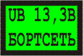
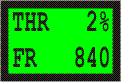
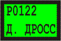

ДИАГНОСТИЧЕСКИЙ СКАНЕР-ТЕСТЕР СТМ-3
Сканеры-тестеры СТМ-3.1 и СТМ-3.2 (выпускались с 2001 года) сняты с производства во втором квартале 2006 года. Заказывайте их улучшенный аналог СТМ-5.
 СТМ-3 ориентирован на автовладельца, готового ремонтировать свой инжекторный автомобиль
СТМ-3 ориентирован на автовладельца, готового ремонтировать свой инжекторный автомобиль
Основной конструктивной особенностью мини-сканеров СТМ-3 является наличие ЖК-индикатора с подсветкой на 2х8 символов и пленочная пультовая панель на 6 клавиш.
Габариты 130х68х30 мм обеспечивают карманное размещение прибора, что практически вдвое меньше универсального сканер-тестера предыдущей модификации типа СТМ-2.
Пленочная клавиатура СТМ-3 обладает тактильным эффектом и отличается повышенной защищенностью от воздействия агрессивных автомобильных жидкостей и пыли.
Диагностический кабель СТМ-3 отсоединяемый (сменный), что позволяет оперативно подключать прибор к диагностической колодке, а также хранить его отдельно, не снимая с автомобиля сам кабель. Это особенно удобно для владельцев тех автомобилей, где диагностическая колодка размещена в труднодоступном месте или под капотом, а также, когда прибор не желательно оставлять в автомобиле.
В СТМ-3 предусмотрена работа в следующих режимах, выбираемых из экранного меню:
- чтение/сброс неисправностей;
- просмотр параметров;
- управление исполнительными механизмами и изменение параметров;
- чтение комплектации системы;
- чтение паспортных данных.
Все параметры разбиты на строго фиксированные группы, состоящие из 5—15 параметров, СТМ-3 позволяет зафиксировать срез значений параметров (запрет обновления значений) в пределах группы и просмотреть значения параметров, зафиксированные в конкретный момент времени.
При отображении параметров СТМ-3 может индицировать либо один параметр с его кратким описанием, либо два параметра без краткого описания, например:


Перемещение на последующие параметры в пределах данной группы осуществляется нажатием клавиш «Up», «Down».
Выбор режимов и подрежимов работы СТМ-3 осуществляется перемещением по экранному меню нажатием клавиш «Up», «Down», вход в режим и выход из него—нажатием клавиш «Entr», «Esc».
В режиме отображения неисправностей на экран СТМ-3 выводится, например, следующая информация:

во второй строке экрана попеременно отображаются две строки описания неисправности. Перемещение на следующие неисправности осуществляется нажатием клавиш «Up», «Down».
- СТМ-3 управляет всеми механизмами и корректирует все параметры, доступные по управлению в каждом конкретном блоке управления.
- СТМ-3 отображает все неисправности как текущие, так и накопленные, которые зафиксировал конкретный блок управления.
- СТМ-3 позволяет сбросить накопленные коды неисправностей.
- СТМ-3 выводит все паспортные данные, хранящиеся в каждом конкретном блоке управления.
- СТМ-3 позволяет просмотреть комплектацию системы, на которую настроен конкретный блок управления.
ИСПОЛНЕНИЯ СТМ-3:
- СТМ-3.1 диагностирует системы управления автомобилей ГАЗ, УАЗ с блоками МИКАС 5.4, МИКАС 7.1, МИКАС 7.2, АВТРОН, СоАТЭ-АВТРОН и VDO (ГАЗ-560 с дизелем STEYR (Штайер)).
В базовый комплект СТМ-3.1 входят: рабочая сумка, прибор СТМ-3.1, кабель диагностический ГАЗ-1 (euro-0/2), руководство по эксплуатации, паспорт.
Дополнительно к базовому комплекту можно заказать кабель ГАЗ-2 для диагностики ГАЗ-560 с дизелем STEYR/Штайер.
- СТМ-3.2 диагностирует системы управления автомобилей ВАЗ с блоками BOSCH M1.5.4, BOSCH M1.5.4N, ЯНВАРЬ-5 (и его модификации), BOSCH MP7.0H (euro-2) и BOSCH MP7.0H (euro-3).
В базовый комплект СТМ-3.2 входят: рабочая сумка, прибор СТМ-3.2, кабель диагностический ВАЗ (euro-0/4), руководство по эксплуатации, паспорт.
Дополнительно к базовому комплекту можно заказать перемычку АПС.
Руководство по эксплуатации и паспорт на прибор СТМ-3 в формате *.pdf можно взять здесь.